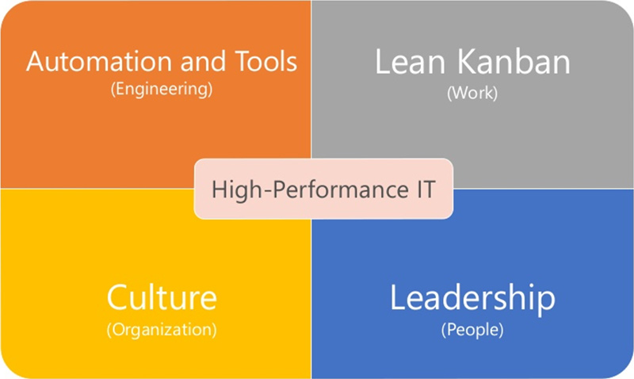
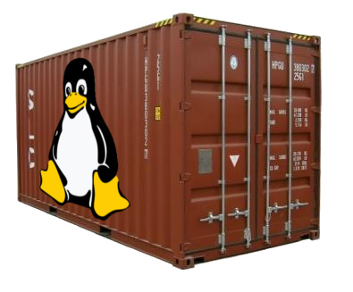
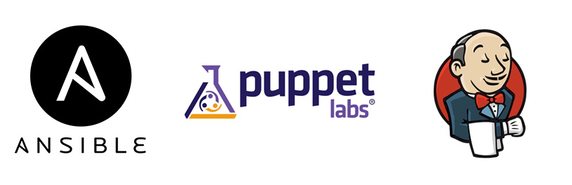
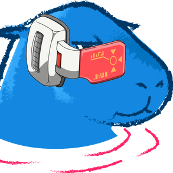

O deploy não deve ser um evento
Como podemos aplicar esses conceitos?
DevOps e o segredo revelado dos unicórnios

Containers and more containers

Nas Trincheiras de DevOps: Puppet, Ansible e Jenkins na Nuvem

Piratas do DevOps: Navegando em Águas Misteriosas
Escalando times e salvando casamentos com continuous delivery
